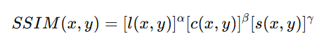

论文信息
- 标题：Backdoor Attack on Deep Learning-Based Medical Image Encryption and Decryption Network
- 发表年份：05 October 2023
- 发表期刊/会议：IEEE Transactions on Information Forensics and Security(Volume: 19)Page(s): 280 - 292
- DOI 链接: 10.1109/TIFS.2023.3322315
摘要概述
本文主要研究了对医疗影像加密和解密模型的攻击，提出了一种加解密网络后门攻击范式，并分别针对加解密场景设计了相应的攻击方式。
在攻击加密模型中，采用了后门鉴别器，它与普通鉴别器进行随机训练，以混淆加密过程，最终导致加密失败。
在解密场景中，替换了部分子网参数，解密带有触发器的图像时，使图像解密失败。
本文还做了两点革新：一是考虑到参数替换会导致模型性能下降，采用了模型剪枝来进一步减少参数替换量，从而增强攻击性能；二是采用图像隐写术为每张图像生成不可见的触发器，提高后门攻击的隐蔽性。
研究背景与动机
研究背景
1、医疗图像中包含大量敏感信息，如患者的病历、诊断图像等，这些数据一旦泄露可能带来严重的隐私风险。因此，医疗图像的加密和解密技术一直是医疗信息安全领域的重点研究方向。
2、近年来，基于深度学习的医疗图像加密方法，如CycleGAN等，能够有效地实现图像的风格迁移，将医疗图像转换为难以识别的加密图像，从而提升图像的安全性。然而，现有的加密方法仍然可能受到攻击，尤其是在训练阶段引入后门的情况下。
动机
作者通过通过三篇引文10、22、25，看到了目前的后门攻击方法主要使针对监督模型，并且难以应用于半监督和无监督。同时看到了在在基于深度学习的医疗影像安全领域在抵御后门攻击能力上的缺陷。
论文方法与技术
相关工作
A.基于深度学习的医学图像加解密网络的发展历程
深度学习在医学图像加解密中的引入：
- 最早基于深度学习的医学图像加解密技术是采用卷积神经网络（CNN）进行特征提取，并将其用于加密。研究人员使用CNN从虹膜图像中提取特征，并通过纠错编码对其进行加密（Li等，2018年）。此方法通过异或操作进行图像加密。
深度学习与混沌映射结合：
- 一些学者进一步发展了将深度学习与混沌映射结合的方法来增强加密效果。例如，Maniyath等人提出了一个强大的深度神经网络，该网络通过混沌映射来加密图像，能有效抵抗多种攻击。
Cycle-GAN 在医学图像加解密中的应用：
- Cycle-GAN 被用于将医学图像的风格转化为随机分布像素的密文图像，作为加密解密网络的核心架构之一。该方法成功实现了医学图像的风格迁移和加解密。
B.后门攻击
后门攻击概述：
- 后门攻击是指攻击者在模型训练过程中植入后门，使得模型在遇到特定触发器时产生预期的行为，而在没有触发器的情况下，模型表现正常。Badnets 是最早提出的后门攻击模型之一，针对图像分类任务有效地演示了这种攻击。
动态后门攻击：
- 动态后门攻击通过改变触发器的模式和位置来增加攻击的隐蔽性。例如，Salem等人提出了动态后门攻击策略，触发器的模式和位置可以变化，增加了检测难度。
多样化后门攻击的应用：
- 除了图像分类任务外，后门攻击还可以应用于生成模型、语言模型等复杂系统。例如，张等人通过触发短语让生成模型生成特定字符串或冒犯性文本。
对深度学习加密网络的后门攻击：
- 大多数研究集中在分类模型的后门攻击，然而加密和解密网络同样面临后门攻击威胁。由于加密解密任务缺乏标签，传统的后门攻击方法难以适用，新的攻击方式急需开发。
对生成模型的挑战：
- 现有的后门攻击方法对生成模型攻击存在困难，生成模型的输入需要满足多种特定限制，且现有的推理攻击难以直接应用于生成网络。
C.图片隐写术发展历程
隐写术简介：
- 隐写术是一种通过将信息隐藏在另一种数据（如图片、音频、视频等）中，避免被察觉的技术。最早提出的隐写术方法之一是**最低有效位（LSB）**技术。它通过用秘密图像的n个最重要位替换覆盖图像的n个最不重要位来实现信息嵌入。
基于频域的隐写术方法：
- 除了LSB技术，研究人员还开发了在不同频域中嵌入信息的方法，例如离散傅里叶变换（DFT）、离散余弦变换（DCT） 和离散小波变换（DWT）。这些方法虽然复杂一些，但比LSB更可靠且不易被检测到。
基于深度学习的隐写术模型：
- 最近，深度学习被应用于隐写术中，超越了传统技术的性能。Zhu等人开发了基于自编码器的网络来实现水印嵌入与提取。Ahmadi等人在此基础上引入了残差连接和CNN变换操作模块，以便在任何变换空间中嵌入水印。
隐写GAN模型的引入：
- Zhang等人使用生成对抗网络（GAN）提高了隐写图像的感知质量。该方法能更好地隐藏信息，且隐写图像与原始图像在视觉上几乎无差异。
隐写术在后门攻击中的应用：
- Li等人最早使用基于深度神经网络的图像隐写术生成隐蔽的后门触发器。这种攻击不仅难以被检测到，还能够绕过大多数现有的后门防御措施，因为它的触发器模式是针对具体样本的。
方法论
A.威胁模型
威胁场景：
- 在加密网络的场景中，攻击者了解加密网络的训练过程，并且掌握部分训练数据，但不能更改网络结构。在受害者使用训练好的模型加密医学图像时，攻击者可以在输入图像上植入后门触发器，破坏加密性能。
- 在解密场景中，攻击者熟悉模型的结构和内存布局，但不参与加密网络的训练。攻击者可以修改解密网络的某些参数来插入子网络，从而在输入图像中嵌入触发器时激活后门攻击 。
攻击目标：
- 加密网络：攻击目标是当输入图像中包含后门触发器时，网络无法将其转换为密文图像，而在没有触发器时，网络可以正常加密图像。
- 解密网络：当输入带有后门触发器的密文图像时，解密网络将输出与原始图像完全不同的图像；而当输入的密文图像不含触发器时，解密网络可以成功解密回原始图像 。
后门触发器：
- 无论是加密还是解密场景，后门触发器作为攻击的标志，不应被人眼轻易识别。这种隐蔽性是后门攻击成功的关键因素。

D. Attack Encryption Network (攻击加密网络)
- 加密网络攻击简介
- 在攻击加密网络时，攻击者通过随机训练原判别器和后门判别器，使加密网络输出的图像接近原始图像，而不是生成密文图像。后门判别器的训练使带有后门触发器的输入破坏了加密过程。
- 网络训练过程
- 网络使用原始判别器、解密网络和后门判别器进行联合训练。对于不含触发器的输入，使用原判别器生成加密图像；对于含触发器的输入，通过后门判别器破坏加密过程。
E. Attack Decryption Network (攻击解密网络)
- 攻击方案概述
- 在攻击解密网络中，攻击者通过子网络替换部分解密网络的参数，使得当输入带有后门触发器的图像时，解密网络的性能被破坏，输出不可识别的图像。
- 通道替换与剪枝技术
- 为了减少参数替换的影响，攻击者使用通道剪枝技术，选择要替换的通道，以最小化对解密网络正常性能的影响。实验结果表明，使用剪枝策略能有效提高攻击性能，并减少对正常解密的干扰。
实验设计与结果
一、数据集
**数据来源：**数据集有美国国家医学图书馆提供，并且所有的X光片均来自美国卫生与公共服务部和中国深圳第三人民医院。
**数据内容：**包含结核病表现得正常和异常胸部X光片以及相应得放射科医生读数。
**数据集分类：**90%数据集用作训练数据集，10%得数据集用作验证数据集。
二、实验设计图


三、实验评估
评估指标
结构相似指数（SSIM）
SSIM（Structural Similarity Index Metric）是一种衡量两幅图像相似度的指标。它是通过将图像分解为不同的结构分量，来比较图像在亮度、对比度和结构上的差异。
公式如下：
**亮度比较l(x,y)：**用于衡量两幅图像亮度的差异
**对比度比较c(x,y)：**用于衡量两幅图像对比度的差异
**结构比较s(x,y)：**用于衡量两幅图像结构（如边缘、纹理）的差异
峰值信噪比（PSNR）
PSNR是一种基于均方误差（MSE, Mean Squared Error）的指标，描述了图像重建或压缩后的质量与原始图像的差距。它通过对原始图像与处理后的图像进行逐像素比较，计算出两者的差异，然后转化为信噪比的形式。
公式如下：
攻击成功率（ASR）与干净数据准确率（CDA）
ASR（攻击成功率，Attack Success Rate）是一种衡量指标，用来评估带有后门触发的样本是否能够成功使模型输出错误的结果。在医疗影像加密和解密网络的攻击中，ASR用于验证攻击能否成功破坏图像的加密或解密过程。
CDA（Clean Data Accuracy，干净数据准确性）表示在所有未嵌入后门触发器的干净数据样本中，能够被正确加密和解密的图像比例。它是一种衡量网络在处理正常图像时加密和解密的准确性的方法
攻击成功的评估标准
对于加密网络，当SSIM大于0.7且PSNR大于20时，被视为加密失败。对于解密网络，当SSIM小于0.4且PSNR小于10时，解密被视为失败，从而确定攻击成功 .
实验对比图
实验效果图如下：左边为攻击加密网络，右边为攻击解密网络

两种攻击的数据结果


后门攻击方法评估


攻击加密网络的评估
1、后门加密网络参数α：

在训练后门加密网络的过程中，α 是后门鉴别器在整个后门加密网络中出现的概率。上表可看到，随着α 的增大，SSIM和PSNR的值保持增大的趋势。这表明，当α 取较大值时，后门加密网络能够取得更好的性能，并且当α设 置为0.5时，后门加密网络能够取得最好的攻击性能。这也意 味着后门鉴别器应该考虑与起源鉴别器相同的概率。
另外，除了通过设置参数α来训练后门鉴别器和原始鉴别器之外，另一种方法是通过交叉训练的方式来训练后门和原始鉴别器。这意味着训练过程将采用本次普通鉴别器来训练后门加密网络，并且下次采用后门判别器，以替代方式进行训练。通过另一种方式训练后门加密网络，对带有触发器标记的图像进行加密，平均SSIM和PSNR分别为0.74和22.09，均低于使用参数α为0.5训练后门加密网络。可以说，与其他训练方法相 比，所提出的训练方法（使用α为0.5来训练后门鉴别器）可以获得更好的攻击性能。
2、验证加入了后门的密文图像是否还能保持原有的加密安全性能
通过直方图分析和熵分析两种方式进行分析

直方图：
原始X射线图像共有57600（240 * 240）个像素，像素分布更集中在值0和值255上。而密文图 像的像素分布是统一的范围为0到255，这对于防止统计分 析破解更加有效。
图像信息熵：
图像信息熵是图像灰度分布的统计特征。理想情况下，加密图像应与随机噪声相似，灰度分布均匀，理想值应为8。
攻击解密网络的评估
1、信道替换比例η对解密网络的分析

本实验采用第一层通道数作为子网替换的参数，并采用SSIM值作为评价指标来表征实验结 果。第一层共有32个通道，可用于替换的子网通道数设置 为1～8。从图9可以看出，随着待替换通道的增量，激活状 态下的SSIM值，代表后门解密网络解密出的带有后门触发 的密文图像，逐渐减小。这意味着攻击解密网络取得了巨 大成功（密文图像无法被正确解密）。非活动状态下的SSIM值，代表正确解密的无后门触发的密文图像，略有下降，但解密性能基本保持不变。当替换通道数达到4个时， 后门解密网络可以平衡活动状态和非活动状态之间的解密 性能。更换超过4层后，主动攻击的SSIM值仍在逐渐下降，这意味着攻击解密网络可以取得更好的攻击性能。然 而，非主动攻击的解密性能也大幅下降，这表明通过替换4 层以上，正确的解密过程仍然被破坏。因此，如果采用 12.5%（共4层，共32层）层数作为第一层的通道替换比例，则后门解密网络在兼顾攻击和解密的情况下可以达到 最佳性能。
2、关于解密网络的剪枝影响分析

图a是密文图像；图b是采用模型剪枝策略的结果；图c是采用随机选择策略的结果；图d和图e是驶入带有触发器的密文图像破坏解密性能的情况，其中图d是对应模型剪枝策略，图e对应随机选择策略
上表中给出的是两种策略的量化结果
结论与启示
1、首次提出了针对医学图像加解密网络的后门攻击范式
2、对比之前的后门攻击，本文提出的后门攻击能成功运用于无监督模型
3、论文不仅定义了一种攻击加密和解密网络的模式，还为增强这类模型的安全性提供了新的研究方向。其研究结果表明，现有的深度学习加密解密网络存在安全漏洞，这为未来的网络安全研究提供了重要的理论依据。